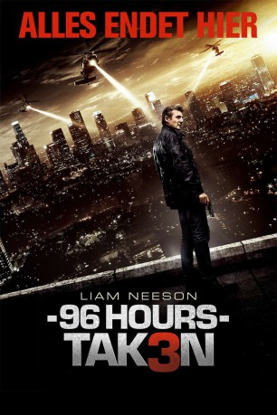

#188 96 Hours - Taken 3
 gesehen am 25.04.2016
gesehen am 25.04.2016
 
 IMDB-Wertung: 6.0 / 10
IMDB-Wertung: 6.0 / 10  Metascore: 26
Metascore: 26 
Ex-CIA-Agent und Familienvater Bryan Mills rettete seine Tochter Kim und deren Mutter Lenore bereits zwei Mal aus den bedrohlichsten Situationen. Diesmal muss er sich primär um die eigene Haut kümmern – Mills wird zum Hauptverdächtigen in einem Mordfall, dessen Opfer ihm sehr nahe stand. Der Einzelkämpfer sieht nur eine Möglichkeit, seine Unschuld zu beweisen: Er muss den Killer selbst ausfindig machen und zur Rechenschaft ziehen. Seine in vielen gefährlichen Missionen geschulten, ebenso besonderen wie tödlichen Fähigkeit setzt Mills aber nicht nur für die Jagt ein, sondern auch, um sich die Polizei vom Hals zu halten. Diese fahndet mit allen Mitteln nach dem früheren Spion, angeführt von dem hartnäckigen Polizeiinspektor Franck Dotzler …
Jahr: 2014
Dauer: 109 Minuten
FSK: 16
Land: Frankreich Studio: UFATonspuren: DTS - ,
Untertitel: Deutsch, Englisch,
Auflösung: 1080p (1920x800) Größe: 10547 MB
Genre: Action, Thriller
Regisseur: Olivier Megaton
Drehbuch: Luc Besson, Robert Mark Kamen, Luc Besson, Robert Mark Kamen
Soundtrack: Nathaniel Méchaly
Darsteller:
 Liam Neeson als Bryan Mills
Liam Neeson als Bryan Mills Forest Whitaker als Franck Dotzler
Forest Whitaker als Franck Dotzler Famke Janssen als Lenore St. John
Famke Janssen als Lenore St. John Maggie Grace als Kim Mills
Maggie Grace als Kim Mills Dougray Scott als Stuart St. John
Dougray Scott als Stuart St. John Sam Spruell als Oleg Malankov
Sam Spruell als Oleg Malankov Don Harvey als Garcia
Don Harvey als Garcia- Dylan Bruno als Smith
 Leland Orser als Sam, Gilroy
Leland Orser als Sam, Gilroy David Warshofsky als Bernie, Harris
David Warshofsky als Bernie, Harris Jon Gries als (Mark Casey
Jon Gries als (Mark Casey Jonny Weston als Jimy
Jonny Weston als Jimy Andrew Borba als Clarence
Andrew Borba als Clarence- Judi Beecher als Claire
 Andrew Howard als Maxim
Andrew Howard als Maxim- Cedric Cirotteau als Maxim Partner #1
 Catherine Dyer als NSA Woman
Catherine Dyer als NSA Woman Jimmy Palumbo als Cop Brooks
Jimmy Palumbo als Cop Brooks Robert Pralgo als Cop Crime Scene #1
Robert Pralgo als Cop Crime Scene #1- Tony Williams als Cop Crime Scene #2
 Al Vicente als Cop Crime Scene #3
Al Vicente als Cop Crime Scene #3- Alexander Wraith als Cop Utility Room
 Shelley Calene-Black als Cop Debriefing Room
Shelley Calene-Black als Cop Debriefing Room- Adam J. Smith als Cop Technician Surveillance Van
 Jimmy Gonzales als Cop Lenore House #1
Jimmy Gonzales als Cop Lenore House #1- Michael Shikany als Clerk Convenience Store
- Robert Bryan Davis als Clerk Gas Station
- Nazareth Dairian als Clerk Toy Store
- Tony Demil als Impound Technician
- Stefanie Kleine als Waitress Rancho Cafe
- Johnny Harvill als Customer Rancho Cafe
- Angie Dillard als Waitress Restaurant
 Wallace Langham als Mike
Wallace Langham als Mike- Ellen Ho als USC Girl #1
- Haley Craft als USC Girl #2
 Stephanie Honoré als USC Girl #3
Stephanie Honoré als USC Girl #3 Steve Coulter als USC Professor
Steve Coulter als USC Professor- Mike Davies als Pilot Private Jet
- Lauren Sivan als Reporter Crime Scene
- Cornelius Peter als Pastor Lenore Funeral
 Kevin Fry als Bodyguard Many
Kevin Fry als Bodyguard Many- Katie Mary Garland als Bagel Clerk
 Al Sapienza als Johnson
Al Sapienza als Johnson Chad Donella als Phillips
Chad Donella als Phillips- Alex Disdier als Steward Gulfstream
- Reuven Avi als Officer Parker , uncredited
- Preston Baker als College Student , uncredited
- Mikael Buxton als Russian Thug , uncredited
 Francis Dobrisky als Detective , uncredited
Francis Dobrisky als Detective , uncredited- Jason Lee Erickson als Student , uncredited
Datei: X:\3-Trilogie(A-F)\96 Hours - Taken\96 Hours - Taken 3 (2014, FSK16, 1920x800).mkv seit 02.02.2015
Festplatte: HD Collection-2(A-Z)-3(A-M)
 Alle Filme aus Gruppe '3-Trilogie(A-F)\96 Hours - Taken'
Alle Filme aus Gruppe '3-Trilogie(A-F)\96 Hours - Taken'